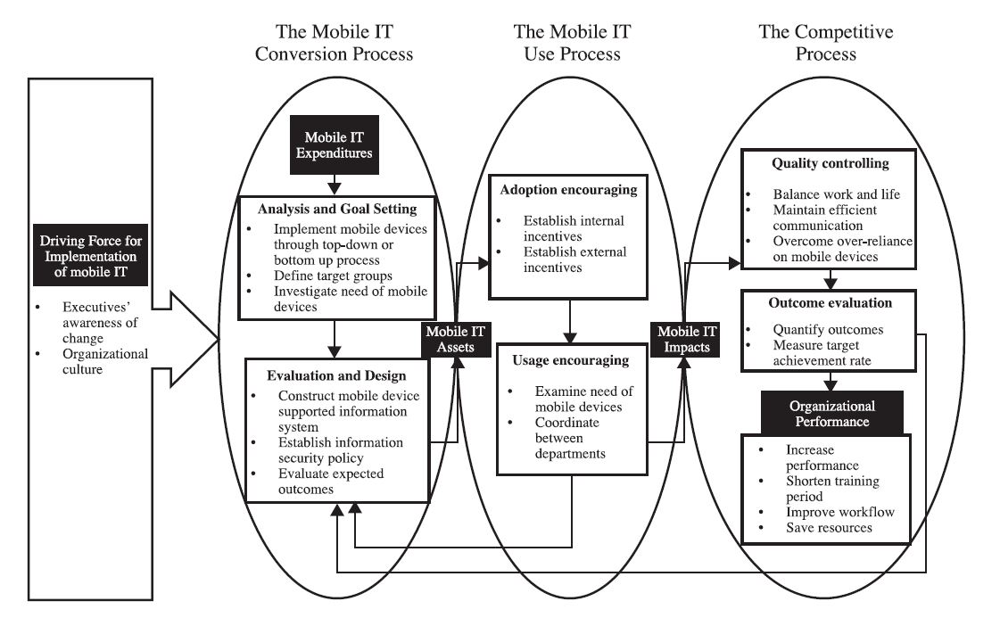
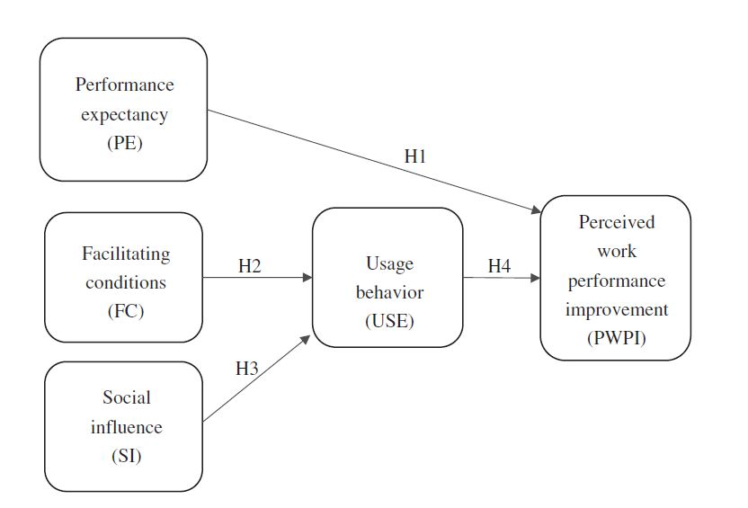

The purpose of this research project is to explore how companies can implement mobile devices for supporting works in the workplace and the challenges of it. Meanwhile, the effects of using mobile devices on work performance were investigated.
We applied survey, diary studies, persona and focus group interview to collect data. The perspectives of staff and supervisors were collected. The quantitative data were analyzed by structural equation model (SEM) and fuzzy-set qualitative comparative analysis (fsQCA) to understand the statistical associations and the set relations of the conjunctions and conditions. On the other hand, the qualitative data were analyzed by protocol analysis and rubrics to explore the companies' strategies of implementing mobile devices in the workplace. In addtion, triangulation and analyst triangulation were also employed to ensure the reliability and validity of the study.
This project uses the modified model for mobile business value creation (MBVC)(Stieglitz & Brockmann, 2012) to explore the initiatives, strategies and performances of 12 local companies during their transformation process of mobilization. The methodology of multi-case study with focus group interviewing is adopted. The results support that change is a critical drive to motivate mobile enterprise strategies. Based on the model for mobile IT business value creation (Stieglitz & Brockmann, 2012), this project provides a comprehensive overview of the mobile IT implementation strategies and performance effects shown in the following figure.
With an extended theoretical framework of UTAUT, this project undertook a survey of employees fromvarious industrial categories in Taiwan. The datawere analyzed by structural equation model (SEM) and fuzzy-set qualitative comparative analysis (fsQCA) to understand the statistical associations and the set relations of the conjunctions and conditions. Using a sample of 692 employees, the results support all four hypotheses and support the structural model built in this study. The findings suggested that using mobile technology in the workplace positively influenced employees' perceived improvement ofwork performance and that the performance expectancy also affectedwork performance improvement. Finally, facilitating conditions and social influence significantly affected mobile technology usage behavior.
Besides general survey and interviews in different industrial companies, this project also invesgated how mobile technology can support the diverse job roles and task characteristics in insurance companies that have implemented mobile IT. Because the insurance industry has the highest willingness and the largest budgets to implement mobile technology in Taiwan.The results showed that the most important tasks supported by mobile technology were instant communication and information access; developing an organizational culture that supports using mobile technology in job-related tasks can increase employees’ adoption of mobile devices; and smartphones are thought to have better mobility and more functions to support main job tasks than tablets.